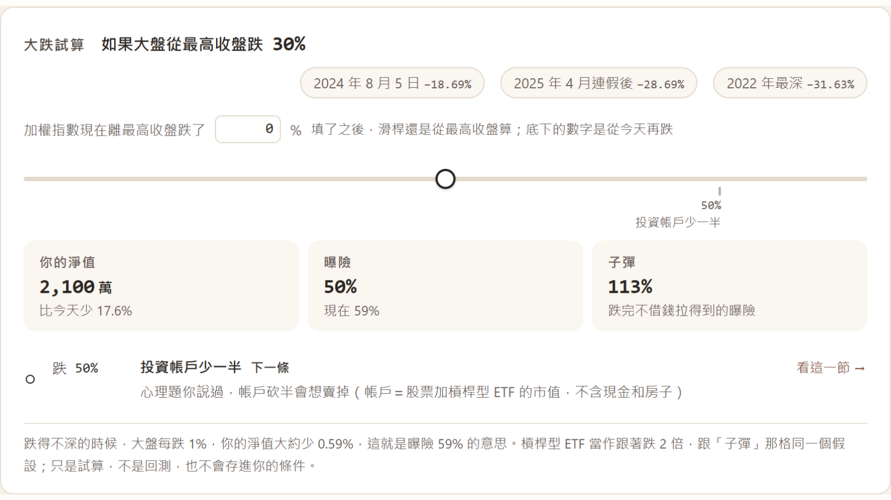
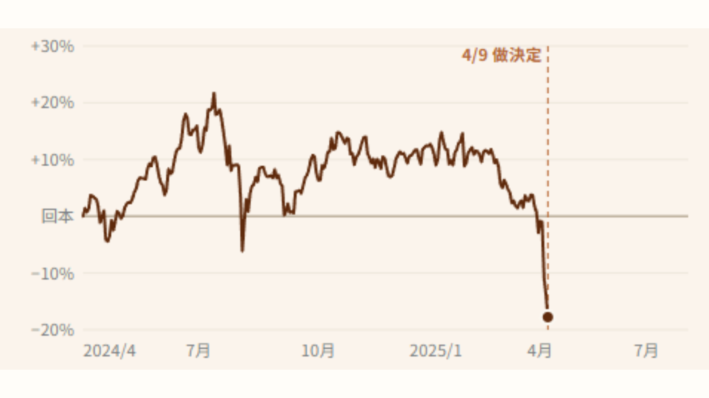
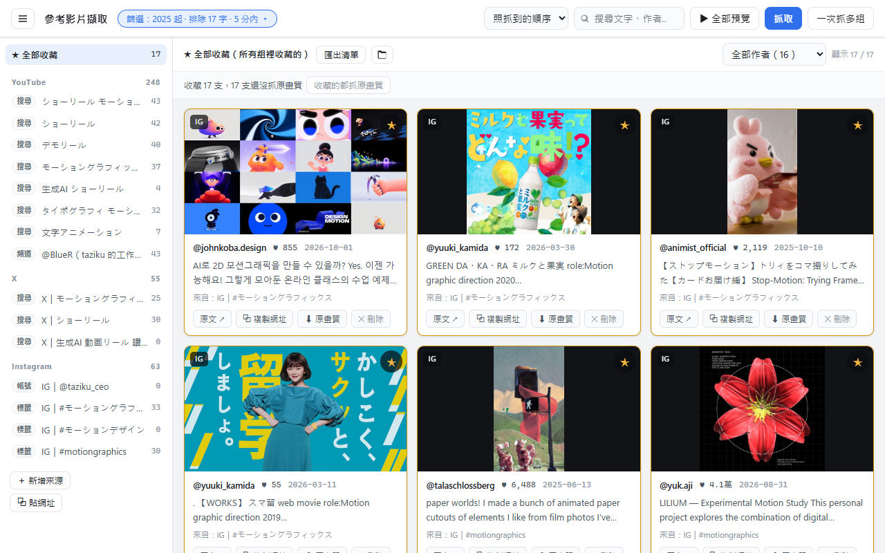
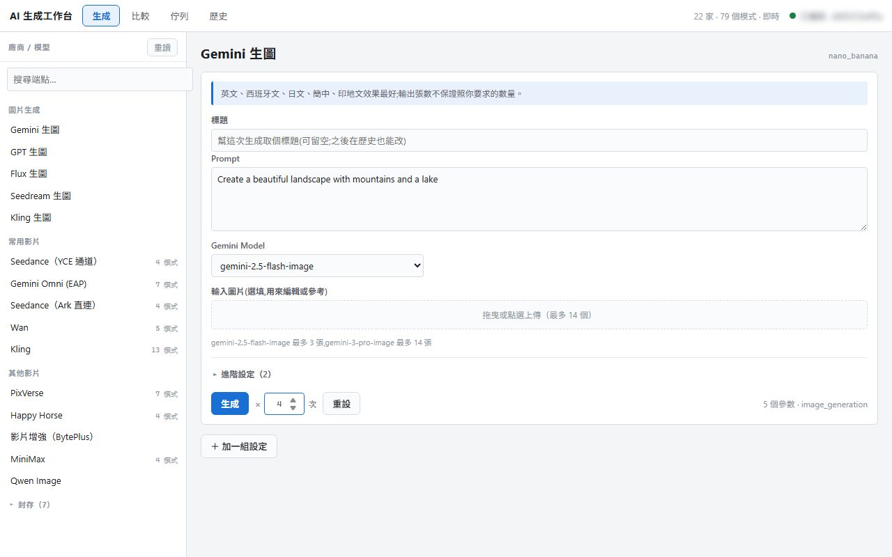
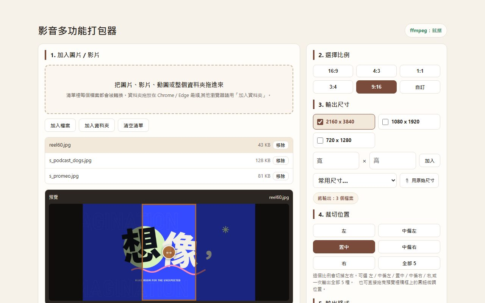

01
兩條路線，一場追逐
- 問題
- 要讓使用者畫路線，角色就照著跑；第一版卻只剩鏡頭穿越空城。
- 解法
- 先鎖定角色正背面，以俯視斜角讓路線清楚可見。主角路線用青色、追兵用洋紅，避開暖橘場景，一次生成 15 秒完整追逐。
我負責企劃、規則與定稿；和 Claude 協作 prompt、合成腳本，Seedance 2.0 生成畫面。
Sam Lin · 台北
在訊連製作 PowerDirector、MyEdit 的特效、模板與功能影片。近兩年以 AI 協作，完成企劃、分鏡、生成與剪接。
案子
01
我負責企劃、規則與定稿；和 Claude 協作 prompt、合成腳本，Seedance 2.0 生成畫面。
02
我負責企劃、分鏡與版本取捨；和 Claude 協作 prompt，Seedance 2.5 生成畫面。
03
我定流程、造型與版本取捨；和 Claude 協作 prompt，Seedance 2.0 生成畫面。
04
我定規則與鏡頭結構；和 Claude 協作 system prompt，Seedance 2.0 生成畫面。
作品
跨素材測試，驗收門檻為八成成功率。
長內容
我整理清流君與大仁來開槓的主張、依據與分歧，再做成決策工具與練習。

章節與規則可回查出處。填入條件，產生規劃書，先指出最該處理的事。
每章整理主張與依據，視內容補上反駁與待查證項目。

重播真實行情，在結果揭曉前做決定。透過分階練習，從小額實作走向讀公開說明書、算成本。
假設你從 2024 年 4 月起，每個月第一個交易日用收盤價買 1,000 元的 0050，可買零股、不算手續費，配息當天再買回去。股價都是證交所的收盤價。
這是事後才知道的。當下沒有人知道會不會像 2000 年那樣一路跌下去。那一次，加權指數從 2000 年 2 月的高點跌了 66.2%，到 2003 年底都還比高點少四成多（不含息）。
節目內容屬原作者，原話請回原節目聽。這是個人學習工具，非投資建議。
工具
我定需求與操作流程，Claude Code 寫程式。

把喜歡的影片拆成關鍵字，批次搜尋 YouTube、IG、X，再用影片牆篩選與收藏。找日系 MG 時，曾一次整理 300 多支參考。

整合多個生成模型，批次送出、統一收檔。Claude Code 操作工具，我看結果、決定下一輪；生成效率約為原來的 3–4 倍。

批次轉尺寸與格式，需要時調整裁切。一批交檔由約 2–3 小時縮至 5 分鐘，工具也交給內容部門使用。
效率與時間為個人估算。
經歷
在訊連製作 PowerDirector、PhotoDirector、MyEdit 的素材、模板與 AI 影片範本，也建立團隊製作流程。
常用工具
製作特效素材、行銷模板與字卡，支援不同畫面比例，讓使用者直接套用。
設計換背景、卡通化、換裝、大頭照與追蹤特效，讓功能一眼看懂。
反覆測試文生圖、文生影片與圖生影片的穩定度；完成 F1、世足、K-pop MV 與萬聖節範本。
把案子拆成可重用的流程與規則，持續迭代，提早發現製作問題並討論。
台北